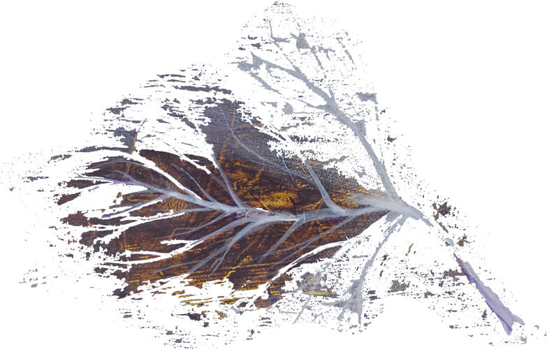

ТРАГА е проект на интернационални музичари и уметници кои создаваат и творат со единствена цел, промоција на врвни уметнички вредности.
Сите песни на групата Трага доаѓаат во три верзии:
Македонска
Интернационална
Инструментална.

TRACE is a project by international musicians and artists who create with one goal in mind--to cultivate and promote art in its purest form.
All songs of the group Traga come in three versions:
Macedonian
International
Instrumental.